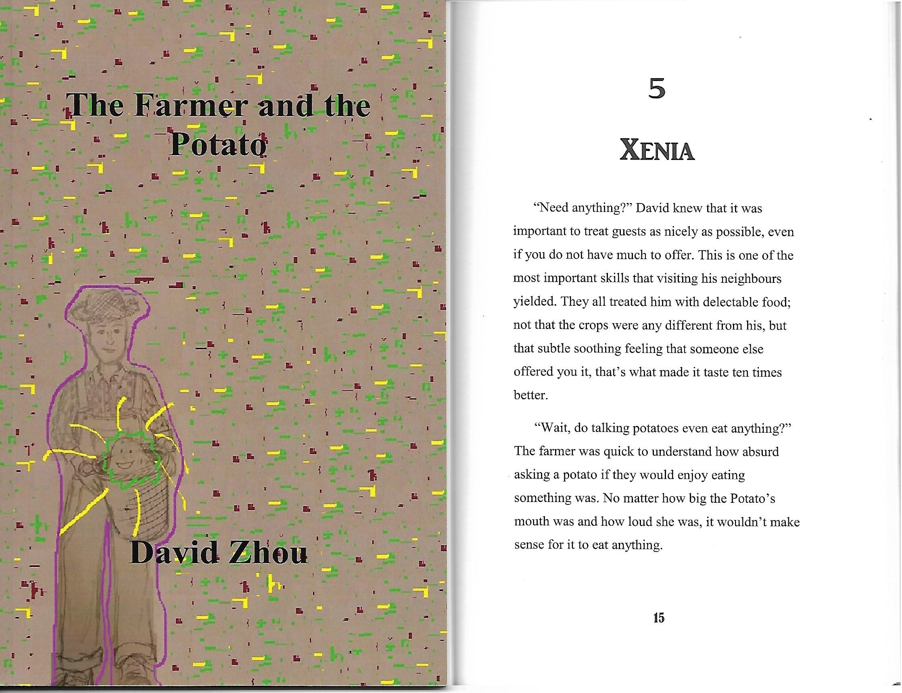

Prufrock asks himself if he has the strength and courage to ask his overwhelming question. It is important to note the fact that he asks this question after tea and cakes and ices
. Considerable time has passed since this question was first mentioned in his heard, as he, in previous stanzas, has not
had tea yet. This respectful manner of conducting business was referred to as Xenia
in ancient Greece.

In a book that I wrote and published, called The Farmer and the Potato,
there is a chapter dedicated to the concept of Xenia. The basic rule of
Xenia as a host is to be hospitable to the guest and provide them with
food, drink, bath and gifts when they leave. Asking questions before a
guest has finished the meal provided to them is generally regarded to
as impolite. In The Farmer and the Potato, David practiced good Xenia
by asking if the potato needed anything despite not having much to offer.
In the poem, Prufrock also practiced good Xenia by finishing his food
before even considering to ask his question. Good Xenia also appears
in the first book of The Odyssey, where Athena disguises herself as Mentes,
and approached Telemachus' home. Immediately, Telemachus greets the
guest and offers a meal for Mentes. He did not ask about why Mentes had
arrived at his home or who he even was until after the conclusion of his meal.
This illumination of the text is provided by David Zhou! These scanned images
are from a novel originally created by David. Right now, you are currently at
"after tea and cakes and ices". Click to return to the excerpt.